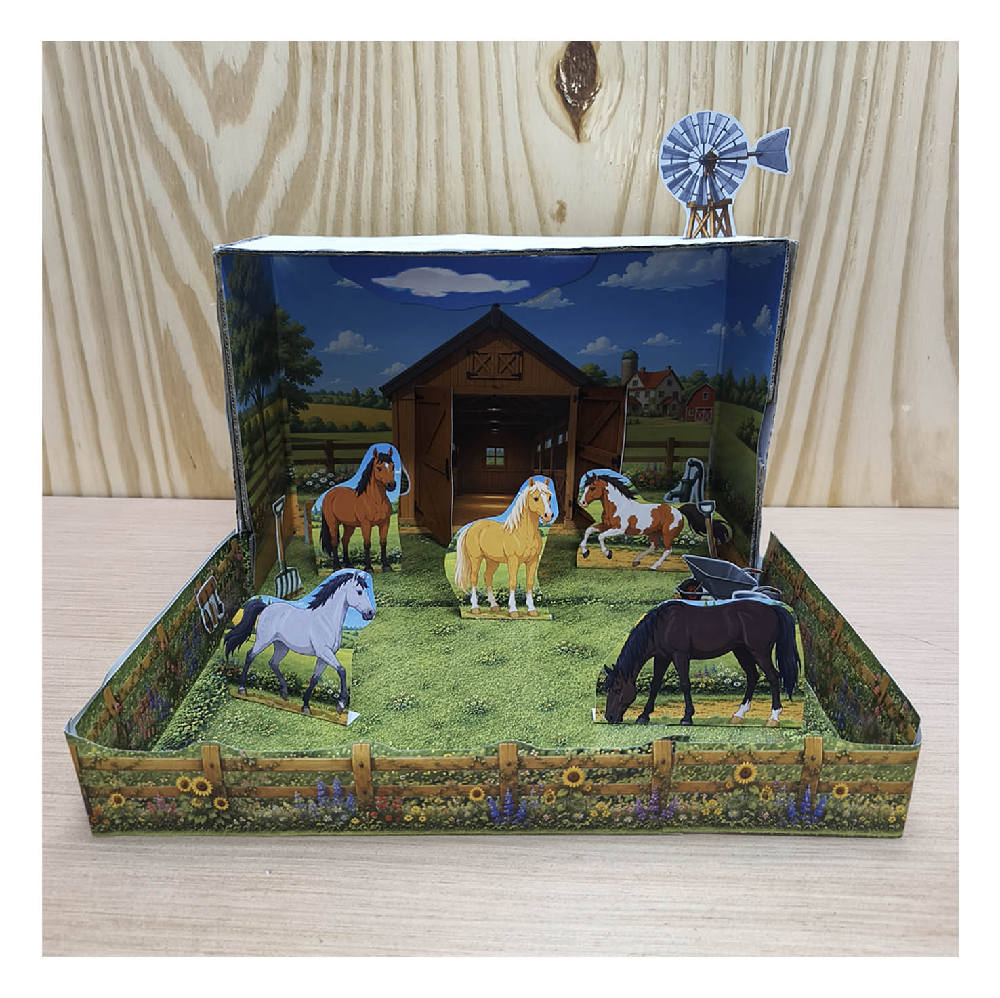
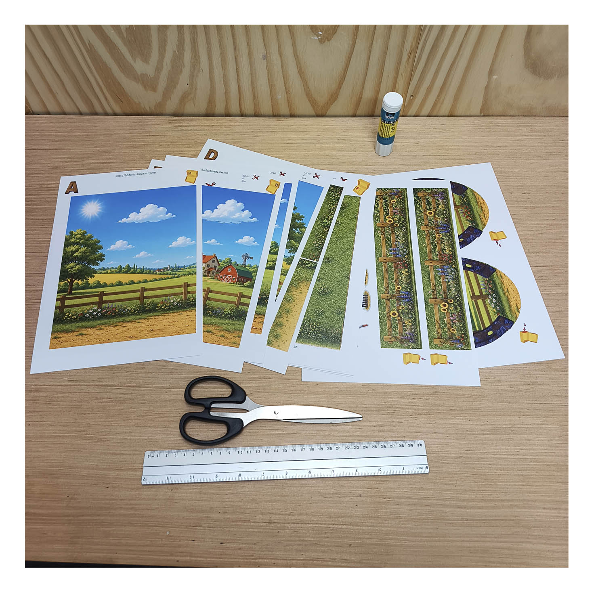
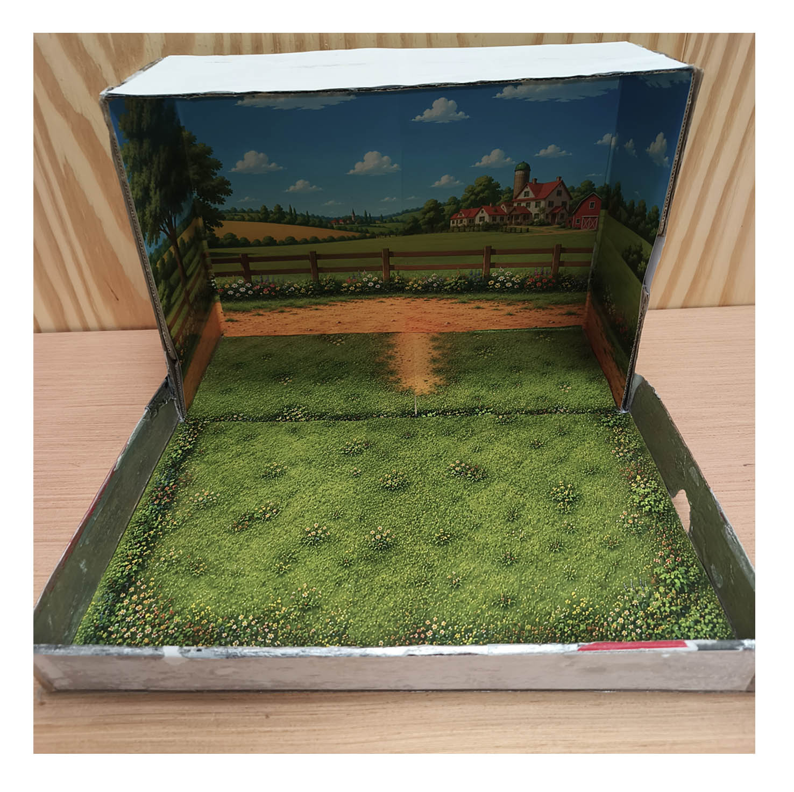
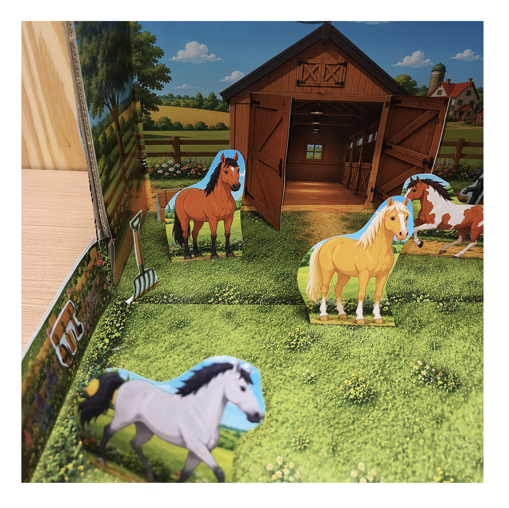
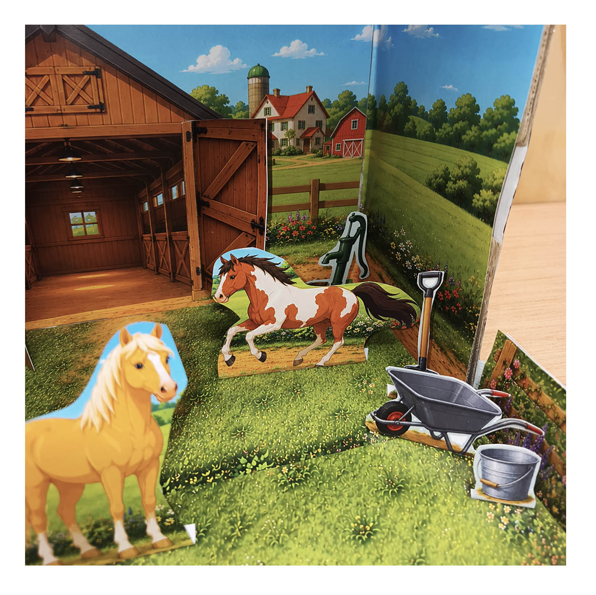
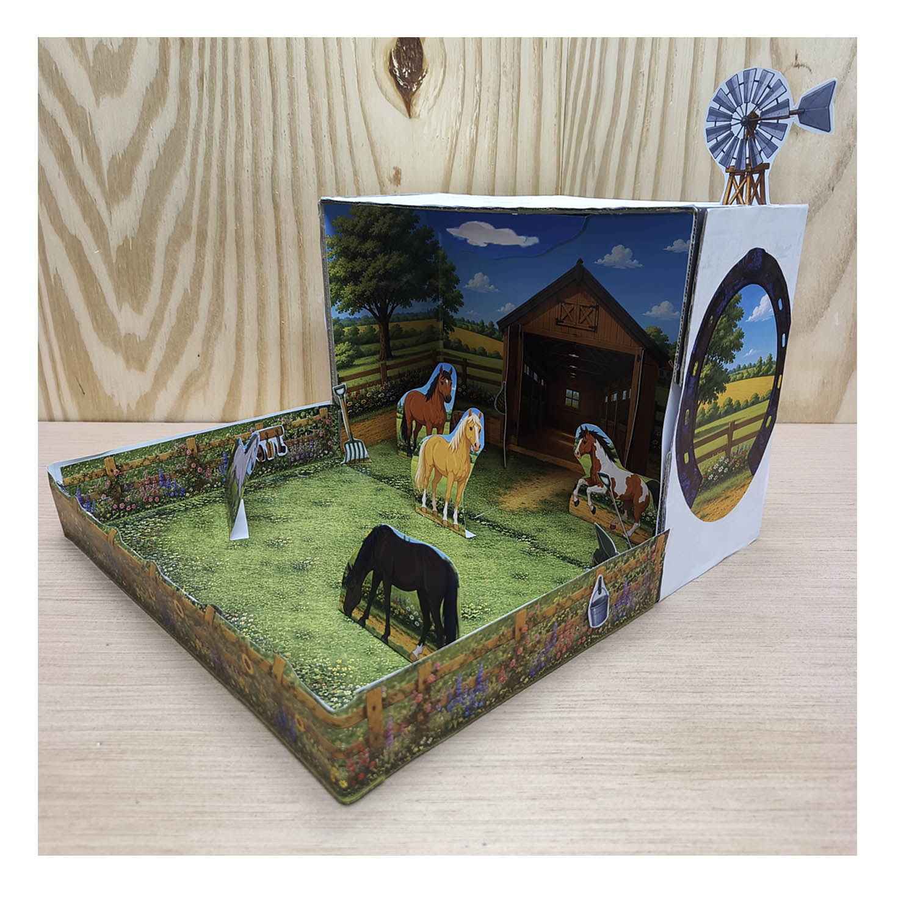

Horse Farm Diorama: Build a Stable & Paddock
Turn an empty shoebox into a little horse farm, with a wooden-style stable, five paper horses and a grassy paddock. Print the artwork, cut out the pieces and enjoy building your own three-dimensional scene.
A hands-on horse craft for families in the Philippines, homeschool activities or a school project about animals and their homes.
Printable English PDF · US$3.49
Digital download · No physical kit · Final total shown at checkout
See how to build it
What Comes in the Horse Stable Printable?
The 13 full-color pages provide the main artwork for a horse stable and paddock scene. A paddock is an enclosed outdoor area for horses; here, paper fences frame the grassy space in front of the stable.
This printable focuses on horses and their stable. It is not a mixed farm-animal kit.
How to Make a Horse Farm Diorama
You will need the purchased PDF, a printer, paper, an empty shoebox, scissors and glue. Ordinary home or office paper works; optional card can support smaller pieces. An adult can help with tricky cuts.




Build the Stable, Fences and Farm Details
Assemble the stable first, then position the open doors and fences. Try the smaller pieces in different places before gluing them down. Leaving some space between the layers helps the scene feel three-dimensional.


Watch the Horse Stable Video Tutorial
Follow the construction from the printed pages to the completed stable and paddock.
A Quick Look at the Finished Diorama
A School Project and a Family Craft Activity
For a lesson on animals and their homes, a child can point out the stable, paddock and water supply. For an art activity, discuss foreground, background and how flat paper becomes a model with depth.
If you are considering it for a Science or Arts performance task, check the teacher’s instructions first. Children can add their own labels and a short explanation to match the assignment.




Questions About the Horse Farm Project
Do I receive a finished diorama?
No. You receive an English PDF to download and print. The shoebox, paper, printer, scissors and glue are not included.
Does the shoebox need to be a particular size?
Use a box you already have. Test the background pieces before gluing and trim or overlap them as needed. A larger box offers more space to arrange the paddock.
Can we use it for a school project in the Philippines?
It can support a horse-themed craft or an animals-and-their-homes presentation. Check your teacher’s topic, size requirements and assessment instructions before choosing it.
Is it origami?
No. This is a printable cut-and-glue papercraft project. You cut out illustrated pieces, fold construction tabs and glue the parts together.
Download the Horse Stable & Paddock PDF
Start your horse farm diorama with 13 full-color printable pages.
Digital PDF only. Final total shown in Paddle checkout before payment.
Your Horse Diorama PDF Is Ready
Payment verified. Download and save your PDF below.
Download Horse Stable & Paddock PDFExplore More Printable School Projects
Build an animal habitat in a forest, explore an ocean diorama, or show how water moves with a water cycle project.